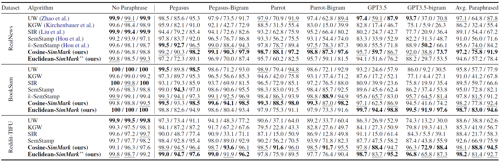
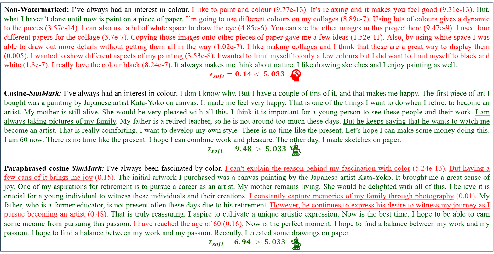

The rapid proliferation of large language models (LLMs) has created an urgent need for reliable methods to detect whether a text is generated by such models.
In this paper, we propose SimMark, a posthoc watermarking algorithm that makes LLMs' outputs traceable without requiring access to the model's internal logits, enabling compatibility with a wide range of LLMs, including API-only models.
By leveraging the similarity of semantic sentence embeddings and rejection sampling to impose detectable statistical patterns imperceptible to humans, and employing a soft counting mechanism, SimMark achieves robustness against paraphrasing attacks.
Experimental results demonstrate that SimMark sets a new benchmark for robust watermarking of LLM-generated content, surpassing prior sentence-level watermarking techniques in robustness, sampling efficiency, and applicability across diverse domains, all while preserving the text quality.
Figure 1: The input text is divided into individual sentences \( X_1 \) to \( X_N \), which are embedded using a semantic embedding model, with optional PCA for dimensionality reduction.
The similarity between consecutive sentence embeddings is computed. Sentences with similarities within a predefined interval \( [a, b] \) are considered
valid, while those outside are invalid.
A soft-\( z \)-test is performed using the soft count of
invalid/partially-valid sentences to determine whether the text is watermarked.
Overview of SimMark: A Similarity-Based Watermark
Figure 2:Top: Generation.
For each newly generated sentence \( X_{i+1} \), its embedding \( e_{i+1} \) is computed using the Instructor-Large model, optionally applying PCA for dimensionality reduction.
The cosine similarity (or Euclidean distance) between \( e_{i+1} \) and the embedding of the previous sentence \( e_i \), denoted as \( s_{i+1} \), is calculated. If \( s_{i+1} \) lies within the predefined interval \( [a, b] \), the sentence is marked
valid and accepted.
Otherwise, rejection sampling generates a new candidate sentence until validity is achieved or the iteration limit is reached. Once a sentence is accepted, the process repeats for subsequent sentences.
Bottom: Detection (+ Paraphrase attack).
Paraphrased versions of watermarked sentences are generated (\( Y_{i} \)), and their embeddings (\( e'_{i} \)) are computed. The similarity (or distance) between consecutive sentences in the paraphrased text is evaluated.
If paraphrasing causes the similarity (\( s'_{i+1} \)) to fall outside \( [a, b] \), it is mismarked as invalid.
A soft counting mechanism (via function \( c(s_{i+1}) \) instead of a regular counting with a step function in the interval \( [a, b] \)) quantifies partial validity based on proximity to the interval bounds, enabling detection of watermarked text via the
soft-\( z \)-test even under paraphrase attacks.
It should be emphasized that soft counting is always applied during detection, regardless of whether paraphrasing is present or not, as we cannot assume prior knowledge of paraphrasing.
Performance

Table 1: Performance of different algorithms across datasets and paraphrasers, evaluated using
ROC-AUC↑, TP@FP=1%↑, and TP@FP=5%↑, respectively, reported from left to right. Higher values indicate better performance across all metrics.
In each column, bold values indicate the best performance for a given dataset and metric, while underlined values denote the second-best.
SimMark consistently outperforms or is on par with other state-of-the-art methods across datasets and paraphrasers, and it is the best on average.
Examples of Watermarked Text

Figure 3: Example of text generated with and without cosine-SimMark using the BookSum dataset.
The first sentence (in black) is the prompt for the model, the green sentences are
valid, and red sentences are
invalid/partially valid.
Numbers in parentheses represent the soft count for partially valid sentences.
The top panel shows the non-watermarked text, which fails to produce a significant detection signal (`z_{\text{soft}} = 0.14 \color{Red}{<} 5.033`, false negative).
The middle panel demonstrates text generated using SimMark with cosine similarity-based watermarking, producing a strong detection signal `(z_{\text{soft}} = 9.48 \color{ForestGreen}{>} 5.033)`.
The bottom panel shows paraphrased watermarked text using GPT-3.5-Turbo, where the embedded watermark remains detectable despite semantic alterations `(z_{\text{soft}} = 6.94 \color{ForestGreen}{>} 5.033)`.
Figure 4: Example of text generated with and without Euclidean-SimMark using the BookSum dataset.
The first sentence (in black) is the prompt for the model, the green sentences are
valid, and red sentences are
invalid/partially valid.
Numbers in parentheses represent the soft count for partially valid sentences.
The top panel shows the non-watermarked text, which fails to produce a significant detection signal (`z_{\text{soft}} = -1.07 \color{Red}{<} 4.13`, false negative).
The middle panel demonstrates text generated using SimMark with Euclidean distance-based watermarking, producing a strong detection signal `(z_{\text{soft}} = 13.07 \color{ForestGreen}{>} 4.13)`.
The bottom panel shows paraphrased watermarked text using GPT-3.5-Turbo, where the embedded watermark remains detectable despite semantic alterations `(z_{\text{soft}} = 11.99 \color{ForestGreen}{>} 4.13)`.
BibTeX
If you found this work helpful, please don't forget to cite our paper: